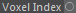

Inports
Outports
Outports
Voxel Index

Outputs the iterative Cell coordinates as a Vector.
Each vector component contains the grid cell coordinate along the corresponding axis.
Note: You can use the Space Converter to retrieve other coordinate space definitions.